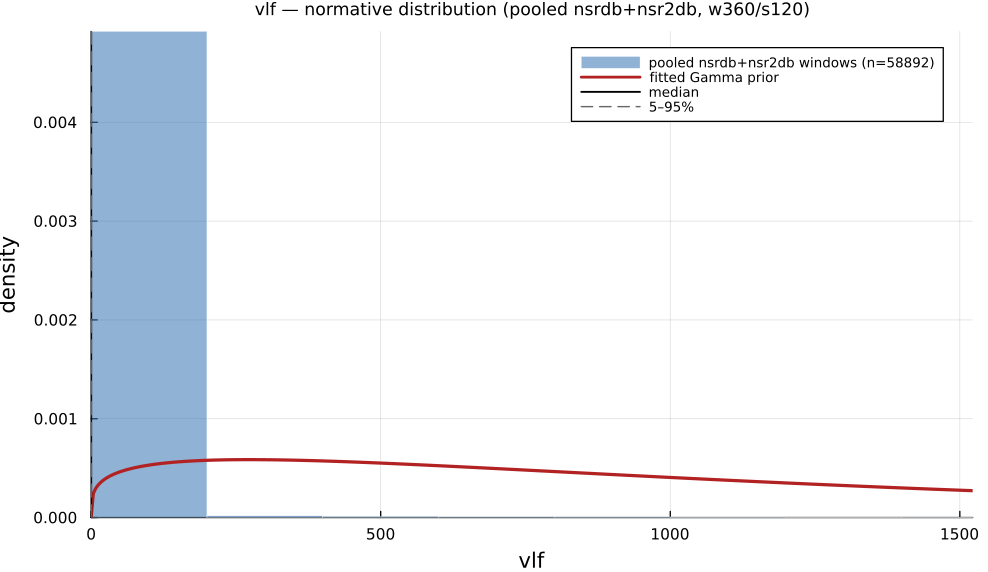

vlf
Very Low Frequency Power (0.003-0.04 Hz)
| Aliases | very_low_frequency |
| Domain | frequency |
| Distribution family | Gamma |
| Equation | integral(PSD; 0.003; 0.04) Hz |
| Resource intensity | ◍◍◍◌◌ moderate, Frequency subgraph (requires a Welch/Lomb–Scargle periodogram first). Warm (shared representation cached) is 14× cheaper. (measured, see §Resources) |
Definition
Very low frequency power (0.003-0.04 Hz). Formally: integral(PSD; 0.003; 0.04) Hz.
What does normal look like?
Fitted normative prior: Gamma(α = 1.268, θ = 1016), KS p < 1e-300, n = 58892.
VLF (0.003–0.04 Hz) is degenerate on 360-beat windows. A 360-beat window (about 5 to 6 min) barely reaches the band's own lower edge, so Welch's frequency resolution cannot resolve power inside it for most windows, and the empirical median and IQR collapse to 0 below. Treat the plot and normal-range table as indicative only; a real VLF estimate needs much longer windows, ideally tens of minutes to hours, or a full-length recording.

Empirical distribution over the pooled nsrdb+nsr2db normative windows (360-beat windows, 120-beat stride), overlaid with the fitted Gamma prior density. Vertical lines mark the median and the 5–95% range.
Normal-range summary (pooled nsrdb+nsr2db)
| statistic | value |
|---|---|
| median | 0 |
| IQR (25–75%) | 0 – 0 |
| 5–95% range | 0 – 0 |
| mean ± sd | 21.73 ± 235.3 |
| n windows | 58892 |
n varies by feature only through per-window validity over the full pooled nsrdb+nsr2db table (n up to 61 715; e.g. sampen/mse drop windows where the statistic is undefined). ulf is the one exception: a 360-beat (~5 min) window contains no ULF-band power, so it uses a long-window NSRDB-only extraction (see its own page).
Use cases
- Slow (0.003–0.04 Hz) rhythms linked to thermoregulation, renin–angiotensin, and physical activity.
- Longer recordings (≥5 min, ideally hours) where the band resolves.
- Prognostic marker in cardiac risk studies.
Applications by area
Evidence is reported at the measure-family level; a specific variant may not be the exact index measured in every cited study.
Clinical
Coverage: statistics. A pooled literature; reviews or meta-analyses exist.
ULF/VLF power is extensively studied in mortality risk stratification: lower ULF/VLF consistently predicts higher all-cause/cardiac/arrhythmic mortality post-MI, in CHF, ACS and elderly cohorts. A 2024 meta-analysis, however, found time-domain measures (SDNN, HTI) the strongest post-MI predictors rather than VLF/ULF specifically, and the band's own physiological interpretation (thermoregulation vs. renin–angiotensin vs. artifact) remains unsettled.
Dominant reported direction: down: lower ULF/VLF → higher mortality (contested against time-domain predictors).
Key references: (Shaffer and Ginsberg, 2017); (Rueda-Ochoa et al., 2024); (Yuda et al., 2021).
Sports & peak performance
Coverage: individual papers. A small, scattered literature with no pooled meta-analysis.
Uncommon as a headline sports metric. Acute dose-response is consistent and strong (ULF/VLF falls monotonically with rising exercise intensity; ambulatory ULF rises sharply with movement, largely a motion-artifact/thermoregulatory effect), but chronic-training/overtraining findings are weak, inconsistent, and even sex-reversed within a single small study.
Dominant reported direction: down acutely with intensity; chronic/training direction unsettled.
Key references: (Shaffer and Ginsberg, 2017).
Contemplative practice
Coverage: individual papers. A small, scattered literature with no pooled meta-analysis.
A minor, seldom-isolated component of meditation HRV research: one classic study reports dramatic, exaggerated VLF-spanning oscillations tied to extremely slow breathing during Chi/Kundalini meditation, while a more careful spectral study found no change in normalized VLF power but a significant drop in the residual (non-harmonic) component: illustrating strong method-dependence (raw vs. normalized vs. residual power).
Dominant reported direction: method-dependent (raw vs. normalized vs. residual).
Key references: (Shaffer and Ginsberg, 2017).
See the effect-distribution meta-analysis page for the harvested per-study effect sizes/p-values behind these domain summaries (docs/zoo_gen/effect_stats.csv).
Resources
Resource-intensity rank ◍◍◍◌◌ moderate is measured: median wall-clock time and allocations over a 360-beat window on synthetic realistic RR (docs/zoo_gen/bench_resources.jl; full grid in resource_bench.csv).
| metric (360-beat window) | value |
|---|---|
| cold median wall-time | 0.05374 ms |
| warm median wall-time | 0.003827 ms |
| allocations (cold) | 29.8 KiB |
Cold = fresh memoization caches (builds every shared representation from scratch); warm = shared representations (diff, periodogram, Poincaré coords, DFA fluctuation) already cached, so only this feature is recomputed. The tier is derived from the cold cost; see Frequency subgraph (requires a Welch/Lomb–Scargle periodogram first). Warm (shared representation cached) is 14× cheaper.
Citation
Akselrod et al. (1981) seminal HRV power-spectrum paper; band per Task Force (1996); Scargle (1982) unevenly-sampled spectral estimator.
Seminal reference(s): (Akselrod et al., 1981); (Task Force, European Society of Cardiology / North American Society of Pacing & Electrophysiology, 1996); (Scargle, 1982).
See the References page for the full bibliography.